Efficient AI
Pruning
Aditya Desai
Many thanks to all the resources listed in References on the main website. Almost all figures are taken from these resources; some were generated with Gemini. Some images are taken from Google Images and still need proper citation (in progress).
Size of AI is huge and it is only growing!
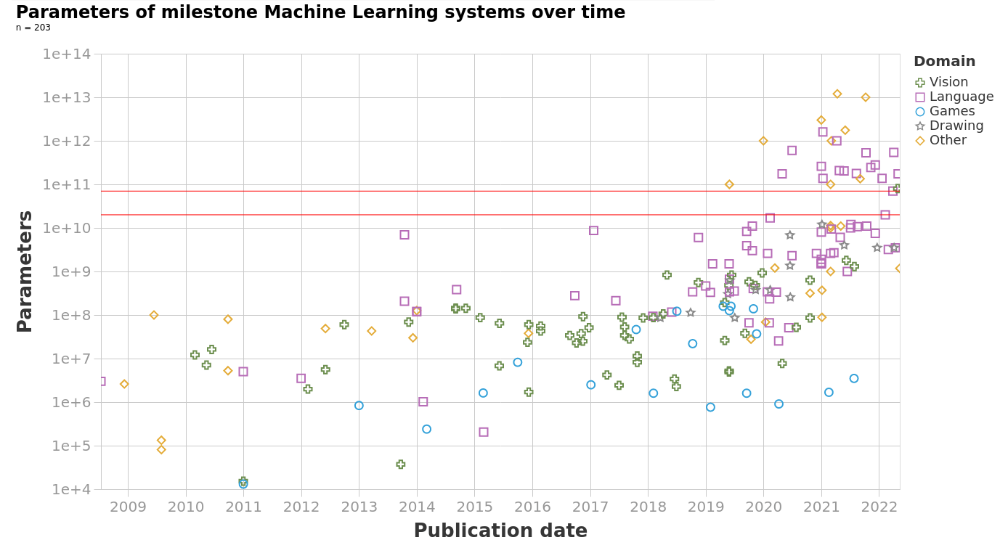
Deployment targets have tight memory budgets
| Device Class | Approximate RAM Range |
|---|---|
| Tiny IoT devices | KB to MB |
| Wearables | 0.5–8 GB |
| Phones & Glasses | 4–16 GB |
| Laptops | 8–64 GB |
| Drones | 2–32 GB |
| Cars | 16–512 GB |
| Edge Servers | 64 GB–4 TB |
Energy cost of compute vs memory
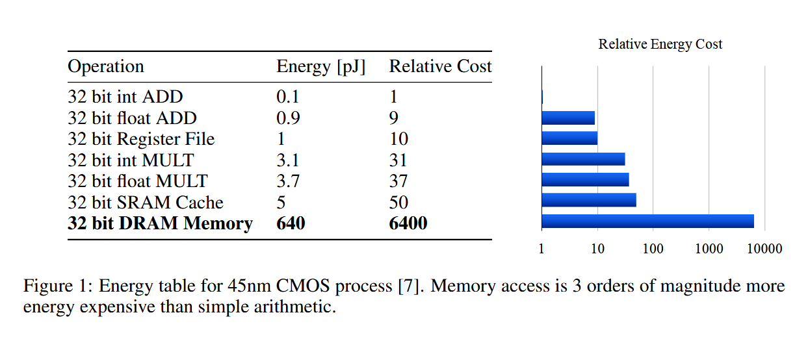
- Memory access (DRAM) is ~3 orders of magnitude more energy-expensive than simple arithmetic.
- Compressing models reduces data movement as well as FLOPs — often the bigger win for energy.
what is model compression?
- Given a trained model, can we reduce its size and computation while maintaining its accuracy?
why model compression?
- saves memory, compute, energy, money, etc
- Unlocks new deployment scenarios. e.g. deploying on edge devices -- PCs/laptops/phones/cars/drones/etc
Techniques are transferrable..
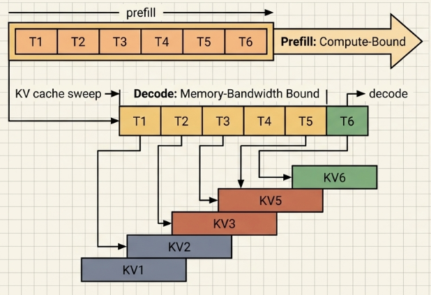
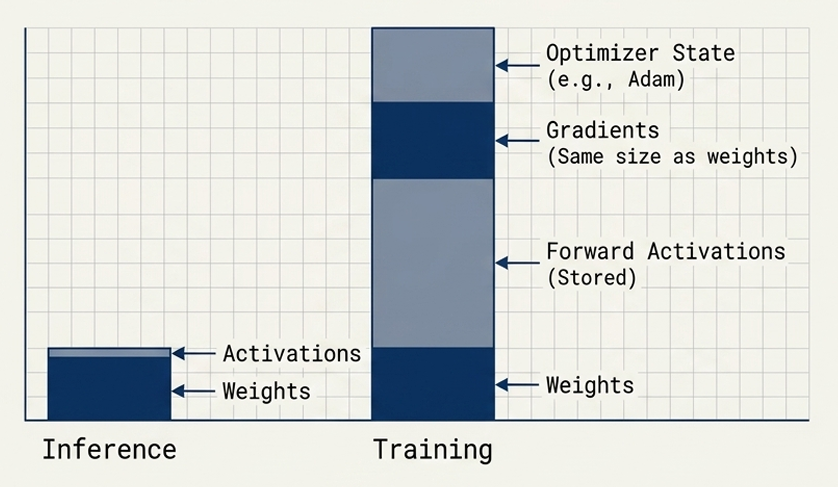
We can apply the techniques we will discuss as part of model compression to activations, gradients, optimizer states, etc.
Pruning / Sparsity
- what is pruning?
- Pruning a neuron
- Optimal Brain Surgeon
- Optimal Brain Compression
- Iterative Magnitude Pruning
- Pruning in Pre-LLM era
- Structured Pruning & Hardware Supported Sparsity
- Sensitivity Analysis for Pruning
- Pruning LLMs
Two useful identities for inverse of a matrix
1) Rank-one update — add outer product $uv^\top$ to $A$:
If you do a one-rank update to A, then it provides a relation between inverse
of A and the inverse of the updated matrix.
O(n2) update instead of O(n3) for inverse of (A+uv^\top)
If you have inverse of a larger matrix, then you can use this to find the inverse of matrix
with one row and column removed.
O(n2) update instead of O(n3) for inverse of B
Pruning: Sparsty in weights
- Pruning: we remove some of the connections in the model.
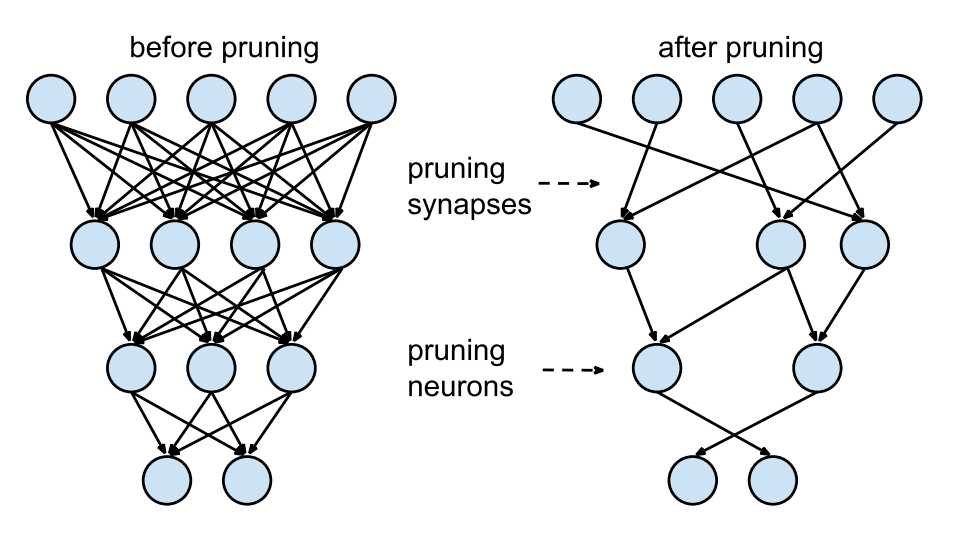
- Removing enough connections can naturally remove some of the neurons and structural components in the model.
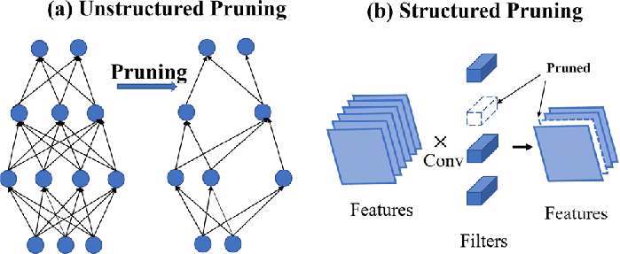

Pruning
- Pruning has a history since 1980s and post deep learning era it is one of the most widely researched techniques
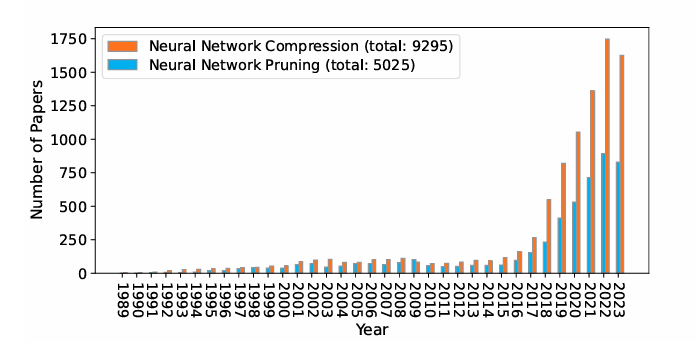
Pruning a neuron
Note Link: notes/pruning_a_neuron.html
what is the complexity of this computation
x, w \in R^d, y \in R- a single neuron pruning right now is O(d3)
-
d×O(d4)d— number of subproblemsO(d3)— inverse of the Hessian
If pruning k neurons, then the complexity is
O(k d4)
A single neuron pruning
- Pruning a neuron itself is quite expensive (disclaimer: this is not the best algo)
- Imagine decent sized model pre-LLM (Convolution / MLP etc)
- Imagine a LLM model!
Pruning a “Model"
(Optimal Brain Surgeon(OBS), Hassibi and Stork, 1993)
Note Link: notes/pruning_a_model.html
All that one needs to know for pruning.
Algorithm for OBS
- Train a “reasonably large” network to minimum error.
- Compute
H−1. -
Find the
qthat gives the smallest saliencyLq = wq2 / (2 [H−1]qq). If this candidate error increase is much smaller thanE, delete theq-th weight and go to step 4; otherwise go to step 5. -
Use the
qfrom step 3 to update all weights (δw). Go to step 2. -
No more weights can be deleted without a large increase in
E. (At this point it may be desirable to retrain the network.)
Complexity of OBS?
- A single step: Dominated by forming / inverting the Hessian:
O(N3), whereNis the number of parameters. - Hessian computation is
O(nN2)wheren is the number of samples andNis the number of parameters.
How can we reduce the complexity of OBS?
Note Link: notes/obc_inverse.html
Complexity of inverse computation?
-
Over
nsamples:O(n N2)(n= # samples,N= # parameters). -
Contrast with a dense inverse from scratch:
O(nN2 + N3).
Other simplifications: Optimal Brain Damage (OBD)?
assumptions- The model is trained to convergence.
- The model is a quadratic local approximation.
- Hessian is a diagonal matrix.
Algorithm for OBD
- Train a “reasonably large” network to minimum error.
- Compute Hessian H
-
Find the
qthat gives the smallest saliencyLq = ½ Hqq wq2.Delete few low saliency weights -
Update all weights (δw). - Retrain i.e. go to step 1.
Complexity of OBD?
- We only need diagonal entries of Hessian.
Computing diagonal entries of Hessian
Note Link: notes/obd_hessian.html
- The hessian diagonal computation is of the same order as the gradient computation.
- We can compute it using the same algorithm as the gradient computation -- layerwise
Further simplifications: Iterative Magnitude Pruning (IMP)
- Completely let go of the data consideration
- Just prune the weights based on their
magnitude(equivalent to assumingH_{kk}is same for allk) and rely on training to correct the errors
Algorithm for IMP
- Train a dense network to convergence.
-
Compute the magnitude of each weight:
|wi|. - Remove weights with the smallest magnitudes (prune a fixed fraction or all below a threshold).
- Retrain the pruned network. Return to step 2 (iterate until target sparsity).
Iterative Magnitude Pruning (IMP)
- Due to simplicity, it is one of the most widely used pruning algorithms (atleast in the pre-llm era)
- However, training is strictly required. Otherwise it causes significant performance degradation
OBS vs OBD vs IMP (w/o re-training)
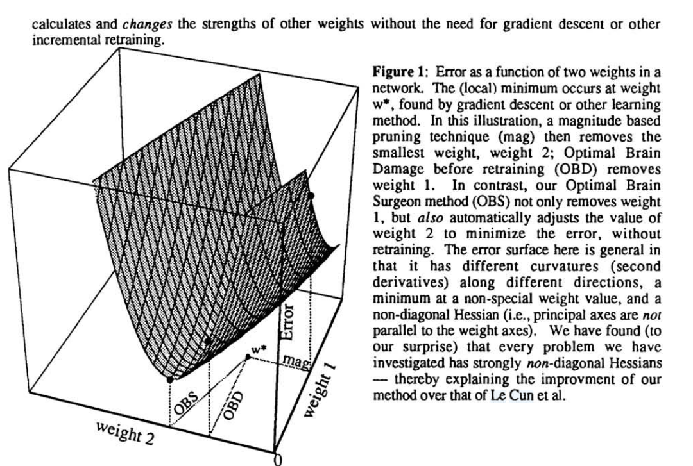
- OBD and IMP may lead to different pruning
- Implications of using "less" informed pruning methods can be significant when not re-trained.
General Framework for Pruning
- Train a dense network to convergence.
- Compute the saliency score of each weight
- Remove weights with the smallest saliency scores
- Retrain the pruned network. Return to step 2 (iterate until target sparsity).
Results from the paper
Learning both Weights and Connections for Efficient Neural Networks" by Han et al. 2015
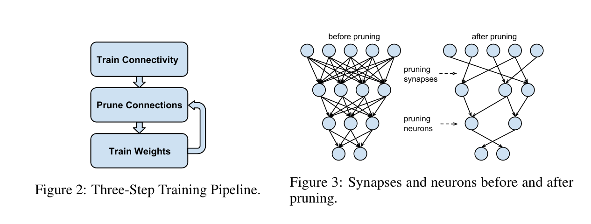
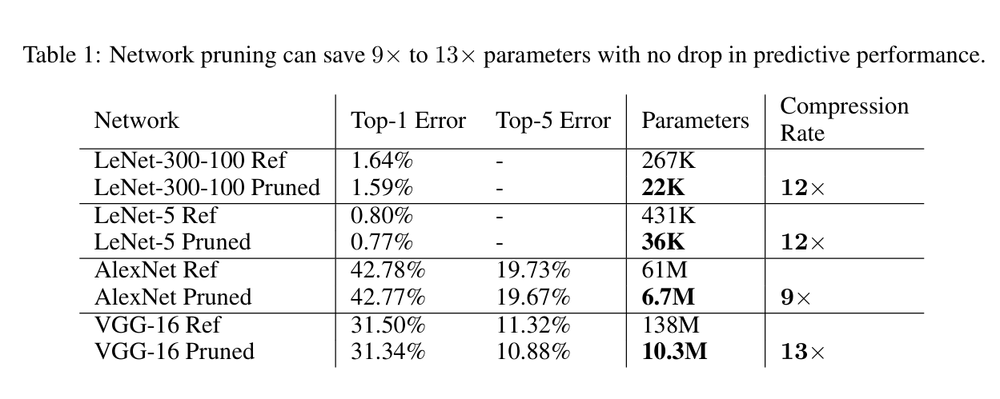
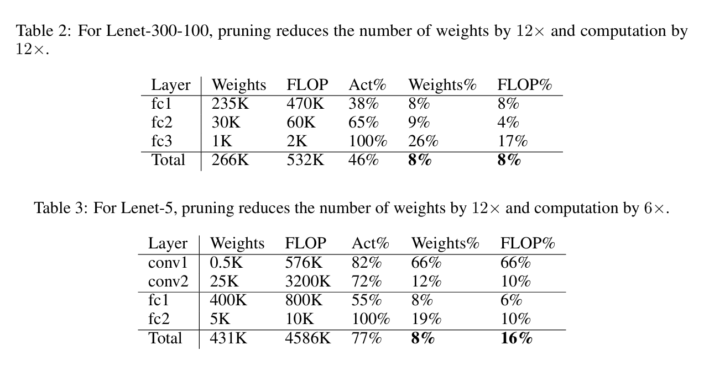
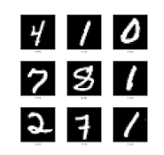
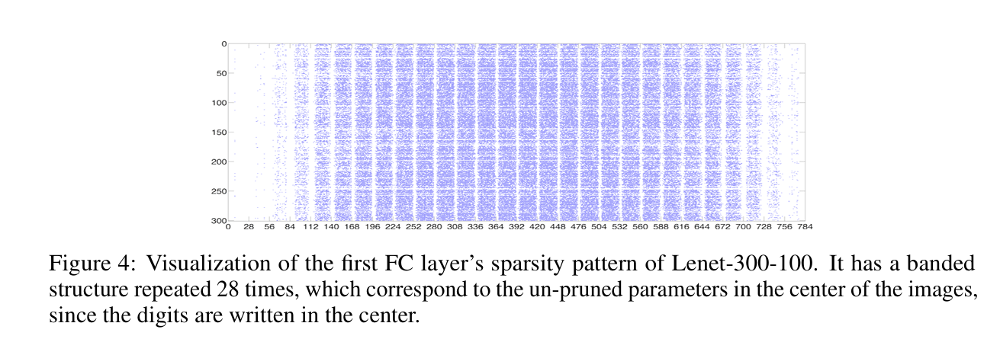
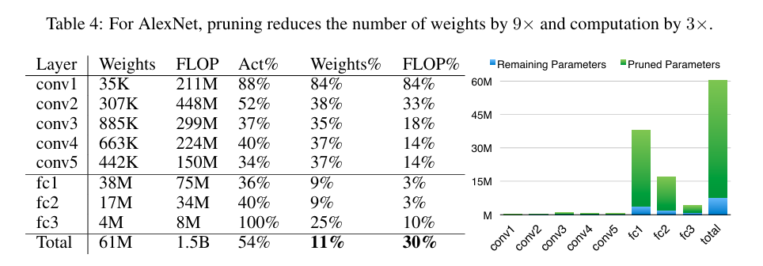
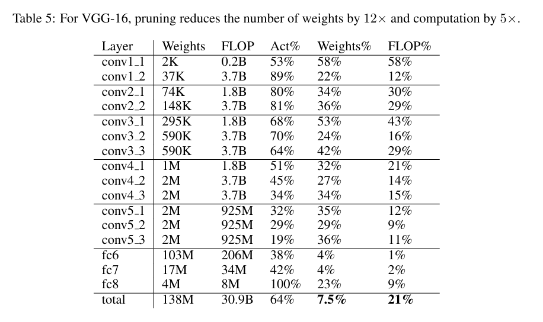
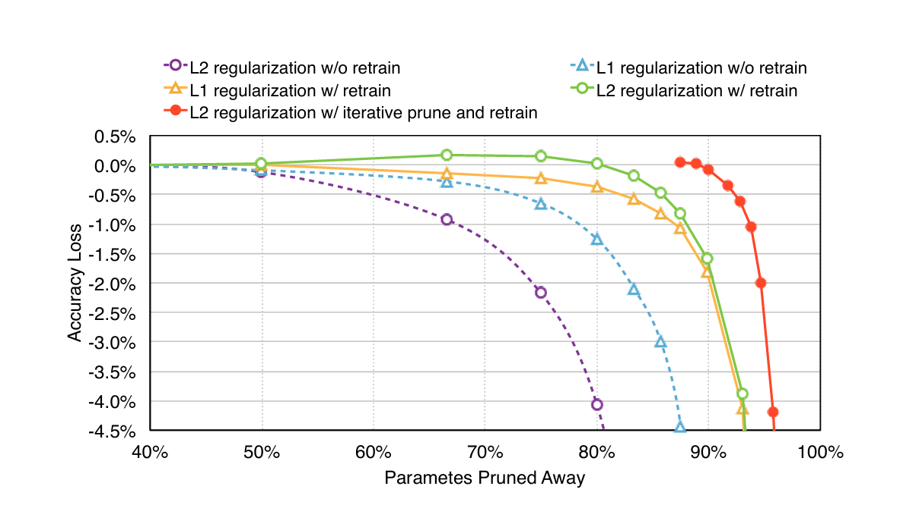
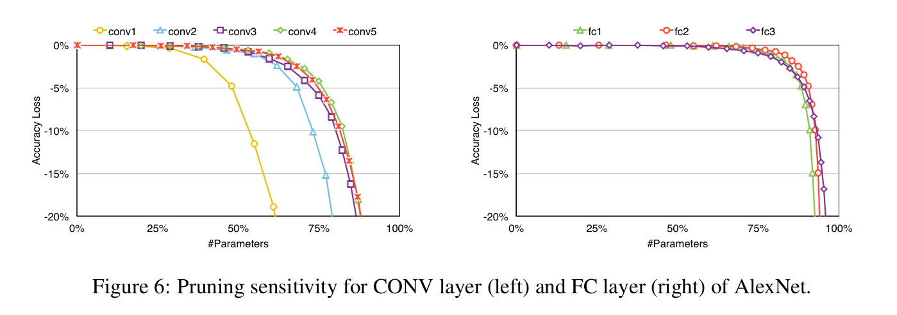
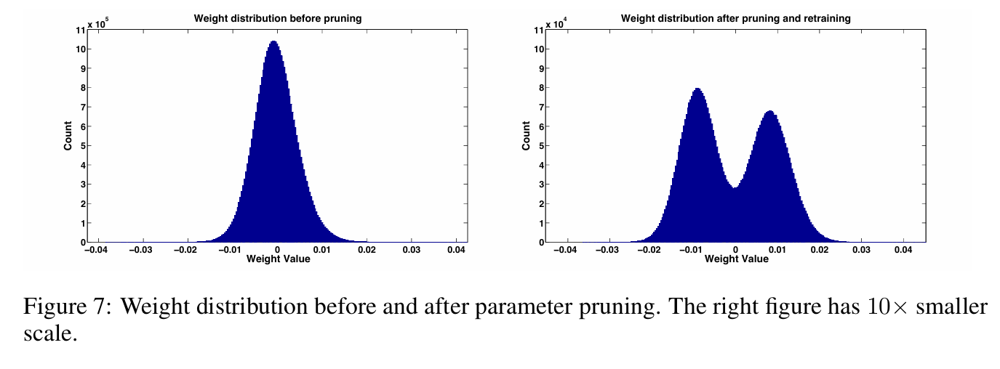
Structured Pruning
Granularity of Pruning
- Unstructured pruning: Gives most control over the qualty vs. memory trade-off
- Then why go for structured pruning?
Hardware is not friendly to unstructured sparsity
- The results that we saw earlier are on simpler hardware such as CPUs, or low-end GPUs. Arguably, these are the target hardware for pruning.
- GPU hardware (esp Nvidia) today does not support unstructured sparsity efficiently. So gains are present only at extreme sparsity levels.
- sparse matrix multiplication cannot use tensor cores (N:M sparsity is a fix we will discuss)
- Contiguous memory access is not guaranteed for unstructured sparsity
Pruning a Linear layer -- a hardware friendly way

Pruning a Linear layer -- a hardware friendly way
- Look at the algorithm where weight is used and make sure that the sparsity does not break contiguous memory access
Pruning a Linear layer -- a hardware friendly way
- Neuron / Channel pruning: Remove columns/rows to reduce the shape of the workload
- Block Sparsity: Ability to skip certain "blocks" in computing the matrix multiplication — block-wise sparsity
Pruning a convolution -- a hardware friendly way

- Implementation specific
Pruning a convolution -- a hardware friendly way

- Im2col and GEMM implementation of convolution (#channels = 1)
Pruning a convolution -- a hardware friendly way

- Apply same ideas as linear layer
How to prune? (General Recipe for Groups)
- Train a dense network to convergence.
- Compute the saliency score of each group of weights
- Remove group with the smallest saliency scores
- Retrain the pruned network. Return to step 2 (iterate until target sparsity).
How to prune?
- Extend OBS (sim. OBD) to get saliency and update rule for groups of weights? (Exercise)
- Iterative Magnitude Pruning (IMP) can be extended to groups of weights through l_p norms
-
The $\ell_p$ norm of a weight vector $w$ is defined as:
$\displaystyle \| w \|_p = \left( \sum_{i=1}^{n} |w_i|^p \right)^{1/p}$ - While training, you can use group wise $l_p$ regularizer to induce group sparsity.
Results from the paper
“Learning Structured Sparsity in Deep Neural Networks” by Wen et al.
Unstructured sparsity does not show speedups on CPUs / GPUs

Even at high sparsity, irregular sparse execution can be slower than dense GEMM because storage and indexing overheads dominate.
Structured pruning for CNNs
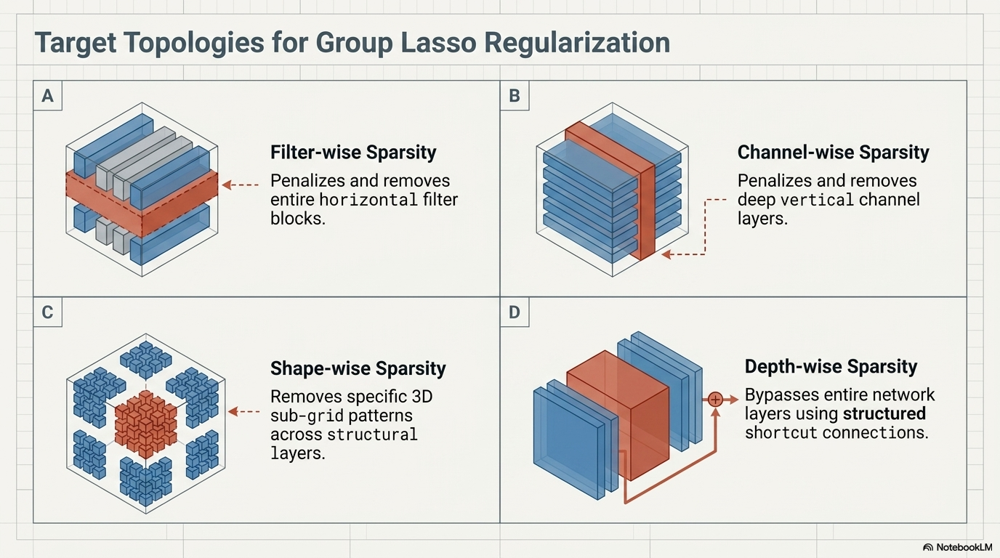
Experimental setup
- Reported speedups are layer-wise and measured on CPU unless specified.
-
Three-step scheme:
- Train with group regularization.
- Prune groups with the lowest magnitude.
- Fine-tune the remaining network.
LeNet: filters, channels, and filter shapes
| LeNet # | Error | Filter # | Channel # | FLOP | Speedup |
|---|---|---|---|---|---|
| 1 (baseline) | 0.9% | 20–50 | 1–20 | 100%–100% | 1.00×–1.00× |
| 2 | 0.8% | 5–19 | 1–4 | 25%–7.6% | 1.64×–5.23× |
| 3 | 1.0% | 3–12 | 1–3 | 15%–3.6% | 1.99×–7.44× |
| LeNet # | Error | Filter size | Channel # | FLOP | Speedup |
|---|---|---|---|---|---|
| 1 (baseline) | 0.9% | 25–500 | 1–20 | 100%–100% | 1.00×–1.00× |
| 4 | 0.8% | 21–41 | 1–2 | 8.4%–8.2% | 2.33×–6.93× |
| 5 | 1.0% | 7–14 | 1–1 | 1.4%–2.8% | 5.19×–10.82× |
Structured groups preserve LeNet accuracy while reducing layer FLOPs substantially and reaching up to 10.82× measured speedup.
MLP and ConvNet structured sparsity
| MLP # | Error | Neurons per layer | FLOP per layer |
|---|---|---|---|
| 1 (baseline) | 1.43% | 784–500–300–10 | 100%–100%–100% |
| 2 | 1.34% | 469–294–166–10 | 35.18%–32.54%–55.33% |
| 3 | 1.53% | 434–174–78–10 | 19.26%–9.05%–26.00% |
| ConvNet # | Error | Row sparsity | Column sparsity | Speedup |
|---|---|---|---|---|
| 1 (baseline) | 17.9% | 12.5%–0%–0% | 0%–0%–0% | 1.00×–1.00×–1.00× |
| 2 | 17.9% | 50.0%–28.1%–1.6% | 0%–59.3%–35.1% | 1.43×–3.05×–1.57× |
| 3 | 16.9% | 31.3%–0%–1.6% | 0%–42.8%–9.8% | 1.25×–2.01×–1.18× |
Learned structure cuts MLP FLOPs and accelerates ConvNet layers without degrading—and sometimes improving—test error.
AlexNet on ILSVRC 2012
| # | Method | Top-1 err. | Statistic | conv1 | conv2 | conv3 | conv4 | conv5 |
|---|---|---|---|---|---|---|---|---|
| 1 | ℓ₁ | 44.67% | sparsity | 67.6% | 92.4% | 97.2% | 96.6% | 94.3% |
| CPU × | 0.80 | 2.91 | 4.84 | 3.83 | 2.76 | |||
| GPU × | 0.25 | 0.52 | 1.38 | 1.04 | 1.36 | |||
| 2 | SSL | 44.66% | column sparsity | 0.0% | 63.2% | 76.9% | 84.7% | 80.7% |
| row sparsity | 9.4% | 12.9% | 40.6% | 46.9% | 0.0% | |||
| CPU × | 1.05 | 3.37 | 6.27 | 9.73 | 4.93 | |||
| GPU × | 1.00 | 2.37 | 4.94 | 4.03 | 3.05 | |||
| 3 | pruning [7] | 42.80% | sparsity | 16.0% | 62.0% | 65.0% | 63.0% | 63.0% |
| 4 | ℓ₁ | 42.51% | sparsity | 14.7% | 76.2% | 85.3% | 81.5% | 76.3% |
| CPU × | 0.34 | 0.99 | 1.30 | 1.10 | 0.93 | |||
| GPU × | 0.08 | 0.17 | 0.42 | 0.30 | 0.32 | |||
| 5 | SSL | 42.53% | column sparsity | 0.00% | 20.9% | 39.7% | 39.7% | 24.6% |
| CPU × | 1.00 | 1.27 | 1.64 | 1.68 | 1.32 | |||
| GPU × | 1.00 | 1.25 | 1.63 | 1.72 | 1.36 |
Structured Sparsity vs Unstructured Sparsity
- Structured sparsity is more hardware friendly. But usually not very accurate
- Unstructured sparsity is more accurate. But usually not hardware friendly
- Enter: Semi-Structured Sparsity (Supported by hardware natively)
- Any sparsity to be supported by GPU needs to have some structure (Cerebras, with a very different hardware architecture, supports unstructured sparsity natively!
N:M sparsity
- Structured:Every M consecutive weights have exactly N non-zero weights
- Unstructured: Sparsity pattern in side that block is arbitrary
- Starting Ampere compute architecture, N:M sparsity is supported natively(N=2,M=4)
N:M sparsity

2:4 sparse GEMM speedups on NVIDIA A100


why you wont see speedups at times (esp. on newer hardware)?
- Hardware overhead
- Smaller workloads fail to completely populate the tensor cores
- Under optimized kernels (dense kernels are optimized a lot more than sparse kernels just because of popularity)
How much to prune in each layer?
-
Natural alternatives,
- OBS, OBD : iterative pruning already chooses weights dynamically
- IMP: We can do global pruning by choosing weights across all layers
- Are there better ways?
AutoML for Pruning

use RL to learn sparsity predictors for each layer
Pruning LLMs
and now llms...
- Sparse GPT, Wanda
- Bonsai
Can we apply OBS to LLMS?
Can we apply OBS to LLMS?
- O(nkN^2) for OBS (with hessian inverse simplification)
- n = number of calibration data points
- k = number of pruning steps
- N = number of weights in the model
- Remark: This algorithms can "potentially" be applied to LLMs without retraining
- what about OBD ?
Can we apply OBD/IMP to LLMS?
- O(nkN) for OBD (with forward-backward pass simplification)
- n = number of calibration data points
- k = number of pruning steps
- N = number of weights in the model
- Remark: These algorithms need retraining !!
- IMP?: Retraining even more important!! ( some labs like mistral have done it with iterative training)
- Since training is generally not an option, we need to be as "accurate" as possible while pruning: lets go back to OBS!
Applying OBS to LLMs
- Idea 1: Break into sub-problems: If we approximate each layer accurately, the overall error will be low.
- This breaks down approximation further since each row is an independent problem: we approximating each neuron.
- Complexity of applying OBS to a neuron
- O(d^3) for OBS
- O(nd^2) for OBS with hessian inverse simplification
- This needs sequential computation -- cannot be parallelized
O(drowd3) for OBS one layer LLM
Still quite expensive for one layer!!
SparseGPT
Frantar & Alistarh, 2023
Revisit: pruning a neuron
- Jointly optimizing the mask and the weights is NP-hard.
- So assume we already have a mask $M_i$.
Q. Can we then solve the reconstruction problem?
Yes — closed-form solution
- $M_i$ — kept indices for row $i$
- $X_{M_i}$ — data restricted to those features
- $w^{i}_{M_i}$ — updated sparse weights for that row
Q. If we do this, what is the complexity?
Complexity: still dominated by $H^{-1}$
- Main cost: Hessian inverse $\sim O(d^3)$
- Per layer: $O(d_{\mathrm{row}}\, d^3)$
- Hessian depends on data, not weights.
- But we cannot reuse computation across rows: different masks ⇒ different submatrices ⇒ different inverses.
Q. What do we do? Make the masks the same?
Same masks ⇒ structured pruning
- Shared masks would let us reuse one $H^{-1}$.
- That yields structured pruning.
- Efficient for hardware, but generally worse for accuracy.
Q. So what is the way around it?
Reuse one Hessian for another
- Bottleneck is computing many different $H^{-1}$.
- We know relations between inverses of nested submatrices.
Q. Does this remind you of some identity?
Gaussian-elimination update of $H^{-1}$
- Start with $U_1 = \{1,\ldots,d\}$; each $U_{j+1}$ drops the next index from $U_j$.
- Share the nested inverses $(H_{U_j})^{-1} = ((XX^\top)_{U_j})^{-1}$ across all rows of $W$.
- With $B = (H_{U_j})^{-1}$, one Gaussian-elimination step gives the next inverse in $O(d_{\mathrm{col}}^2)$:
Q. Can we use this somehow?
Need rank-1 removals
- To match the identity, each next Hessian must be one column smaller.
- Start from the full inverse (no mask).
Q. Which inverse is then cheap to get by reusing that matrix?
Answer: remove one column at a time
- Any matrix with one column/channel removed.
- ⇒ Sweep left→right: prune a column, update remaining weights, shrink $H^{-1}$.
So let’s do a sweep!
SparseGPT reconstruction sweep
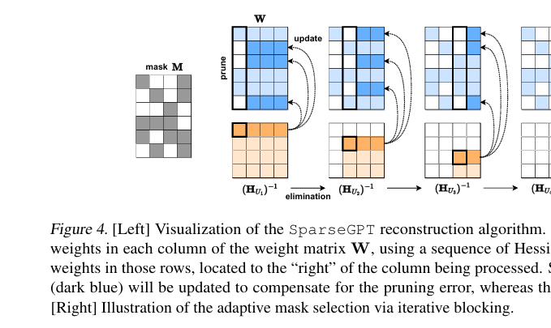
- Compute $H^{-1}$; mask the first column; update weights to the right.
- Shrink the Hessian; repeat for the next column.
Q. How does this relate to an exact greedy compression framework?
Weight-freezing interpretation
- Exact greedy view: compress column by column, optimally updating all not-yet-compressed weights.
- SparseGPT only zeros some weights in a column and only updates a subset of the rest — but “compress” means fix a value and never decompress it again.
- Define column-wise compression as
- ⇒ Exact column-wise greedy scheme.
- Same view cleanly merges sparsification and quantization in one pass.
Q. Should the pruning mask be fixed in advance?
Adaptive mask selection
- Fixed mask (e.g. magnitude / AdaPrune) is a baseline.
- During reconstruction, weight updates change values a lot (correlations).
- SparseGPT chooses the mask adaptively while reconstructing.
Q. Why not just prune the easiest $p\%$ weights in every column?
Uniform per-column sparsity is too rigid
- Forces the same sparsity in every column.
- Especially bad for LLMs: a few outlier features are highly sensitive.
Q. How do we allow non-uniform selection?
Answer: iterative blocking
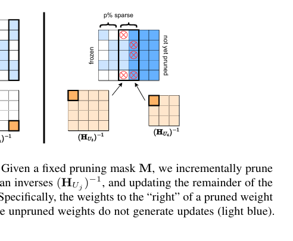
- Select the mask for a block of $B_s = 128$ columns at a time.
- Criterion: OBS reconstruction error $\varepsilon$ from Hessian diagonals.
- Update those $B_s$ columns; then move to the next block.
- ⇒ Non-uniform sparsity across columns, using Hessian info + prior updates.
- For a single column, the criterion reduces to magnitude ($[H^{-1}]_{jj}$ constant across rows).
Extension: structured / N:M sparsity
- Same sweep applies to groups of weights.
- Run OBS-style selection on groups of $M$ weights; prune $N$ of them.
- Natural fit for hardware-friendly N:M patterns.
Wanda
Sun. et. al 2023
Wanda: Applying OBD to every neuron
- OBD-style saliency: $S_{ij} = W_{ij}^2\, H_{jj}$
- $H = X^\top X \;\Longrightarrow\; H_{jj} = \|X_j\|_2^2$ where $X_j$ is all data for jth feature
- $\Rightarrow\; S_{ij} = W_{ij}^2\, \|X_j\|_2^2$
- Wanda score (same ranking): $S_{ij} = |W_{ij}|\, \|X_j\|_2$
Wanda: Applying OBD to every neuron
- No Weight update
- Faster to compute than SparseGPT
- uniform sparsity in each neuron
Results from the paper
"Let LLM Tell You What to Prune and How Much to Prune" by Yang et al. 2025 (ICML)
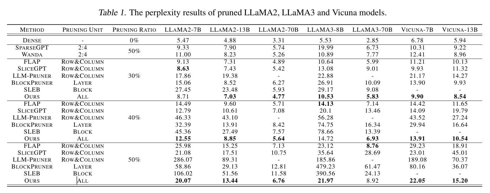
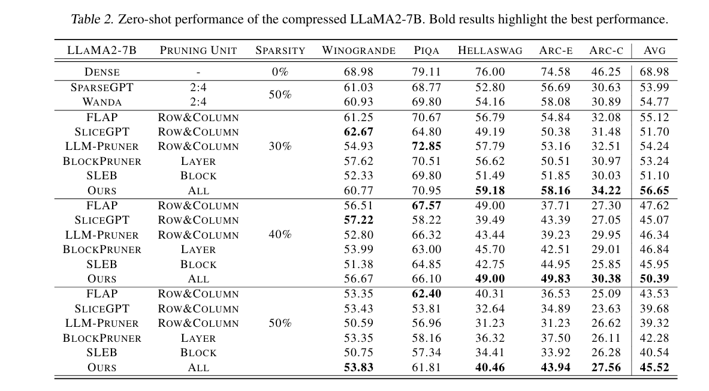
Takeaways for LLM Pruning
- Perplexity and Downstream quality are severely affected by pruning (w.o retraining)
- Note that this is just evaluation of base models. The effect on instruction tuned / reasoning model etc is not even evaluated.
- Even after so many papers, (structured) pruning is not a solved problem.